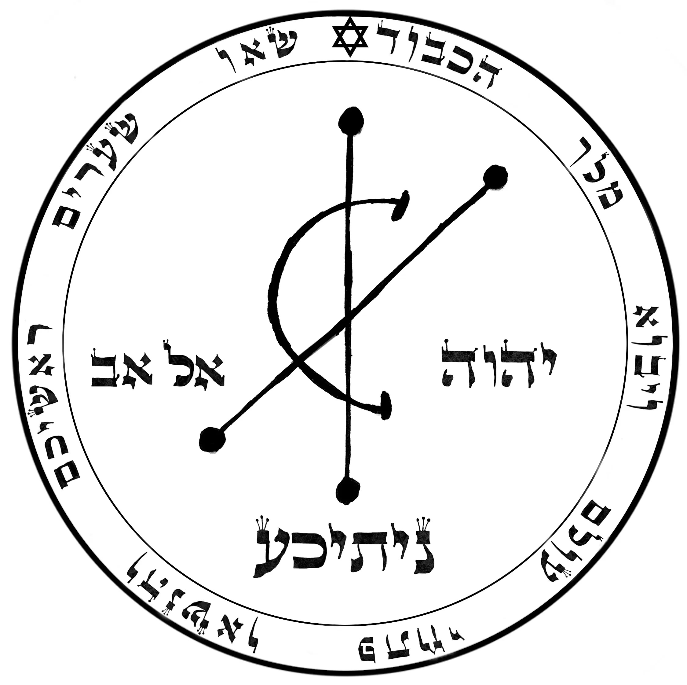
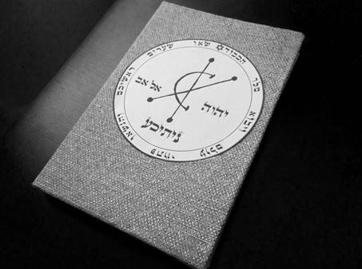
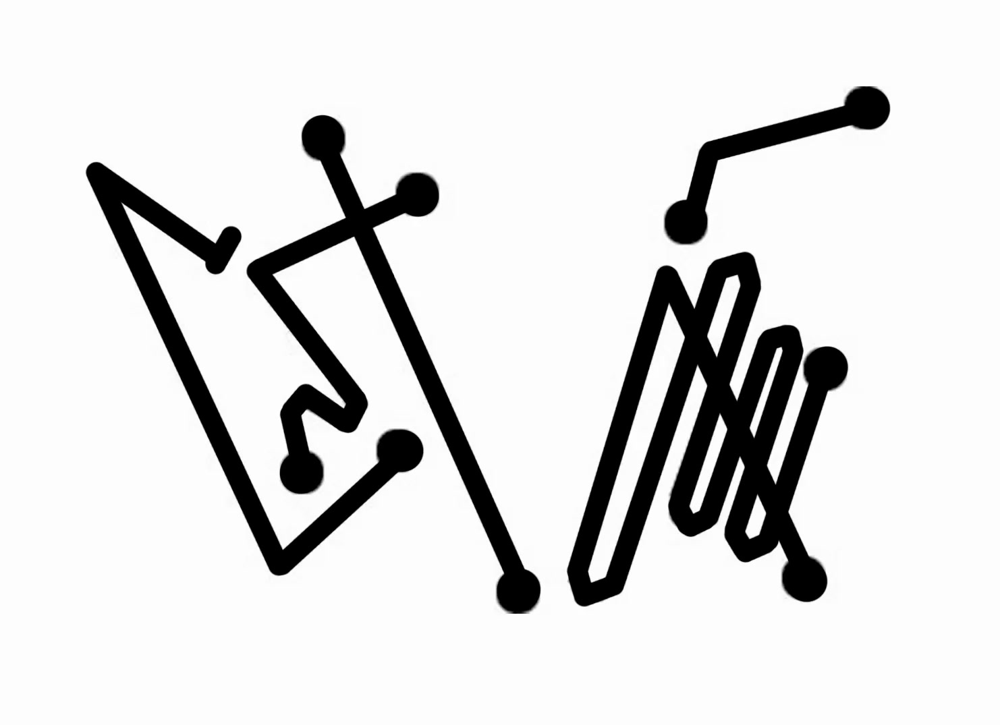

Buy a notebook. It’s that easy. You could spend hours making your own notebook out of fresh parchment, gluing it together with traditional binding methods, but it’s far quicker to buy a notebook. It will work well.
If you can buy something that looks or feels vaguely magickal to you, so much the better, but it isn’t vital. Ideally, there should be no lines on the paper, but again, it is not vital.
You should paint the front cover gray or silver, and paint the back cover orange. You can stick on card or paper if it’s easier. You can do this using cheap paints and a basic brush. You can get what you need at an art shop or just look for something cheap around town. Nothing fancy is required. These colors act almost like a battery, drawing magickal energy through the book when you perform the ritual.
The only problem you will face is that it may take several coats of paint to cover up the writing and logos on the cover. If that’s what it takes, then keep going until all you have are clear gray and orange covers.
A shortcut is to glue white paper or card onto the cover of your notebook, and then paint that, or use colored card or paper. It doesn’t have to be too special. The inside of the cover does not need to be colored.
You may have a thousand questions about the notebook - what size, what style of binding, what weight and so on. Really, you don’t need to worry. So long as you have a notebook of some kind, with pages to write on, and a gray cover, with an orange back cover, the magick will work.
On the front cover, you will need a copy of the following sigil. It can be drawn by hand, photocopied or printed out from the website.

For most people, drawing is out of the question, so it’s completely OK to photocopy it from the book. If you’re using the e-book, then you can download the image and print it out, or even photograph the e-book and print that out.
You can find the image here:
http://galleryofmagick.com/images/
You can stick the printout on the front of your Cashbook, and that will do fine. You might want to trace over the printed image, lightly, with a pen or pencil, to connect yourself to the sigil. It might look something like this:

If you have the confidence, you can draw this as it’s shown above. Use pen, pencil, or any kind of ink. As a rule, it’s best to use black ink or dark pencil.
Copying the Hebrew words might take some practice if you’re not used to writing in Hebrew. Practice on blank paper first. But even if you make a bit of a mess, it doesn’t matter, because you will soon perform a brief ritual that dedicates the book to Nitika.
If you cannot copy exactly, don’t worry. If you get the basic shapes of the letters right, it will work. And if you prefer to print out or photocopy, that is also fine, but it does help if you then take the time to draw lightly over the image with a pencil or pen, to connect yourself to the shapes and images. You do not need to be able to understand the various divine names and words of power, so long as you can see them.
On the orange back cover draw or glue a copy of this sigil:

This should again be drawn using black ink, pencil or pen, or feel free to use a printout. Once again, if you use a photocopy or printout, take the time to trace over the lines lightly with a pen or pencil.
Open your book and on the first blank page of the book write the following words of power:
NAH-KAH EE-AH-OH-EH
These words of power are a statement that means it is your will to recognize God, and this gives you the authority to work the magick.
Once you have written that down, say the words out loud. The AH sound appears in a lot of these words, and this AH is like the a in father. The words are pronounced as follows.
NAH sounds like ah with n at the front.
KAH sounds like ah with k at the front.
EE sounds like me without the m.
AH is the word ah.
OH is the word oh.
EH sounds like yeah without the y.
Accurate pronunciation is not important, but I know people worry about it, so I’m making it as clear as possible. Remember that a bold and confident attitude is far more important than correct pronunciation. If you need more details, you can find them on the Pronunciation and Spelling FAQ page at www.galleryofmagick.com where there’s a video showing you exactly how to say the words.
You’ve now built your Magickal Cashbook, and all you need to do is empower it. Then you can begin to write your petitions in the book to manifest money.